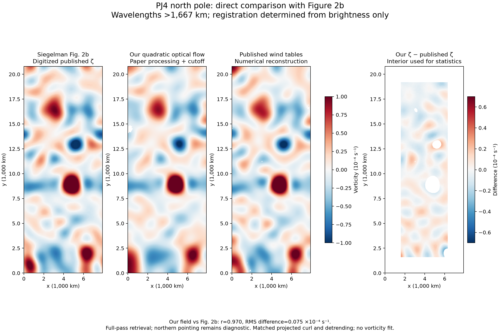
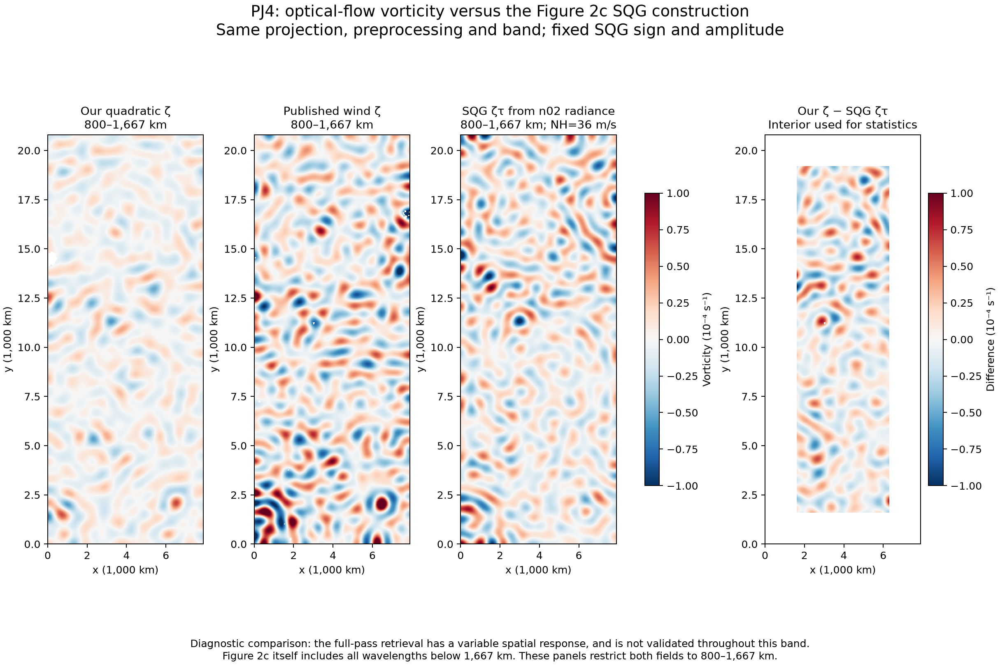
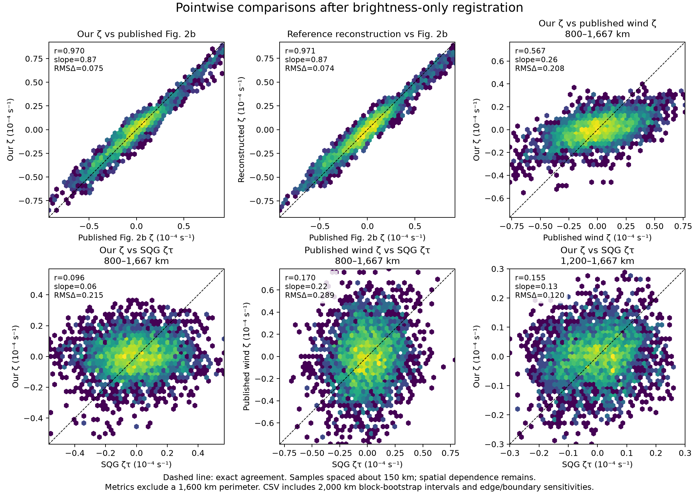
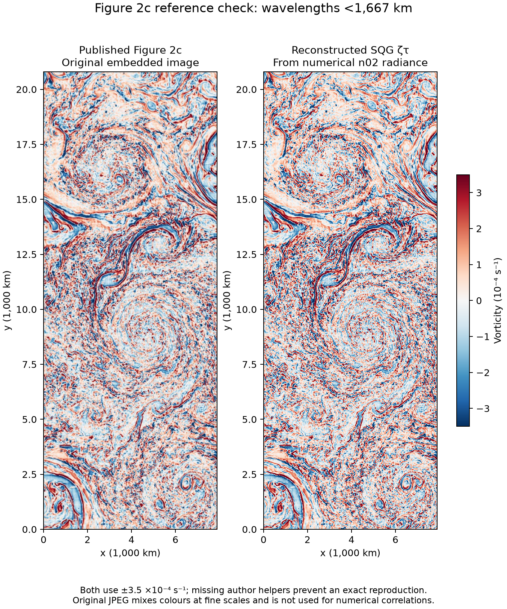

Our vorticity versus Figure 2 and SQG
The camera-corrected quadratic optical flow recovers the large-scale cyclones in Siegelman et al. Figure 2b: r = 0.970 after matching the projection and preprocessing. Agreement with the SQG-derived field is weak in the tested smaller-scale bands. This is not a validated test of SQG.
Northern pointing-adjusted winds remain diagnostic because the earlier broad synthetic check failed. The full-pass retrieval also has a variable spatial response and a different time window from the paper. These limitations survive the strong large-scale agreement.
| Comparison (vertical vs horizontal) | Wavelength band | r | Slope | RMS difference 10⁻⁶ s⁻¹ |
|---|---|---|---|---|
| Our ζ vs Figure 2b | >1,667 km | 0.970 | 0.87 | 7.54 |
| Our ζ vs numerical published winds | >1,667 km | 0.977 | 0.99 | 7.89 |
| Our ζ vs numerical published winds | 800–1,667 km | 0.567 | 0.26 | 20.84 |
| Our ζ vs SQG ζτ | 800–1,667 km | 0.096 | 0.06 | 21.46 |
| Our ζ vs SQG ζτ | 1,200–1,667 km | 0.155 | 0.13 | 12.00 |
| Numerical published winds vs SQG ζτ | 800–1,667 km | 0.170 | 0.22 | 28.86 |
Slopes are descriptive, with intercepts; neither field was rescaled. Primary statistics exclude a 1,600 km perimeter and publication colours clipped at the colourbar ends. Samples are spaced 150 km, but remain spatially dependent. Approximate 2,000 km block-bootstrap ranges and sensitivity results are in the CSV.
Direct comparison with the published ζ
Figure 2b retains wavelengths longer than 1,667 km (the paper rounds this to 1,600 km). Our velocities were projected into the same orthographic plane before applying a common spectral curl, detrending and cutoff. No vorticity information entered geographic alignment.

Comparison with the SQG construction ζτ
Figure 2c shows the opposite side of the cutoff: wavelengths shorter than 1,667 km. A direct comparison of panels b and c would therefore mix disjoint bands. Here both fields retain 800–1,667 km. The SQG amplitude is fixed at N H₀ = 36 m/s, with the published negative sign and log₁₀ optical depth.

Pointwise agreement and amplitude

The reconstructed published winds also correlate weakly with reconstructed SQG over this whole-domain mask (r = 0.170 at 800–1,667 km; r = 0.095 across the paper’s 250–1,667 km band). This does not reproduce the paper’s qualitative statement of striking local correspondence. It warrants checking the original cropped arrays and mosaic preparation, and examining the highlighted streamer region. It is not evidence by itself that SQG is false: our reconstruction lacks the authors’ helper routines and final mosaics, while our native retrieval has unresolved spatial and temporal differences.
Check the numerical SQG reconstruction against the actual Figure 2c

How the comparison was controlled
Geography: I found the already validated map projection inside JOVE; my earlier report missed it. Matching the new 10 km maps to those known 15 km maps gives near-unit same-image correlations. Figure 2a alone determines the final rotation, translation and scale. Held-out cloud-texture r = 0.9654; eight local checks have residual shifts below 2.6 km relative to the mapped radiance. PDF vector axes independently identify the 2,080 ×790 lattice. These are registration checks, not absolute camera-navigation error bounds.
Preprocessing: the paper’s code calls a missing helper with “Both” detrending, whereas its Methods describes mean removal. Sequential detrending reproduces the independently observed optical-depth panel at r = 0.9935. The primary comparison therefore includes separable mean removal on mirrored arrays, the equivalent operation after even reflection. The original physical scalar ζ and the Methods-style global-mean controls are retained: their direct Figure 2b correlations are about 0.785 and 0.786, versus 0.970 after matching the code interpretation. This is an explicit processing change, not an amplitude or geometry fit to winds.
Reference fidelity: the numerical reconstruction from the paper’s supplied wind tables agrees with Figure 2b at r = 0.971, with slope 0.865; our corresponding slope is 0.867. Their similar residuals show that we have not exactly reproduced the final plotted author array. Switching the Butterworth amplitude convention alone leaves reference r = 0.970. A periodic rather than re-mirrored final low-pass gives our r = 0.979. Neither alternative was selected to maximize agreement.
Time and resolution: our northern composite spans approximately 08:10–12:25 UTC; the reference image window is 11:40–12:10, with n01/n03 winds and n02 brightness. Restricting our unchanged estimator to all 48 reference-window exposures leaves 49.0% of the rectangle with valid original vorticity. On shared support it correlates with the full-pass original field at r = 0.963. The exact n01/n03 restriction has no derivative cells under the original three-pair requirement. No missing temporal coverage was filled to manufacture a complete comparison. A 150 km native grid cannot resolve 250 km waves; the full-pass tracking footprint is more restrictive still. Native comparisons below 800 km are omitted.
Support: the full-pass scalar covers 99.84% of the rectangle, published vectors 99.94%, and radiance 99.9998%. Small unsupported holes are nearest-filled solely for FFT calculation, then excluded from comparison masks. Only 0.0162% of the primary interior is unsupported, but adding an 800 km buffer around gaps changes the 800–1,667 km SQG correlation to 0.039; the 1,200–1,667 km result is 0.149. Boundary-margin changes are also retained. No naive independent-pixel significance test is reported.
SQG interpretation: ζ̂τ = −36 |k| τ̂, with angular wavenumber in m⁻¹ and τ = log₁₀(I₀/I). The paper chose H₀ = 9 km to match spectral amplitudes; amplitude agreement is consequently not a fully independent prediction. No NH, sign, brightness gain or wind amplitude was fitted here. Weak pointwise agreement in this analysis neither validates the SQG assumption nor isolates its failure from retrieval/reconstruction limitations.
Figures, samples and provenance
All metrics and controls (CSV) · Geographic comparison samples (CSV.gz) · Methods, provenance and analysis scripts
Full numerical arrays and large image products remain on Unity. The sample download reproduces the 150 km statistical stencil, including masks, coordinates and physical s⁻¹ values; it is not a new independent observation grid.